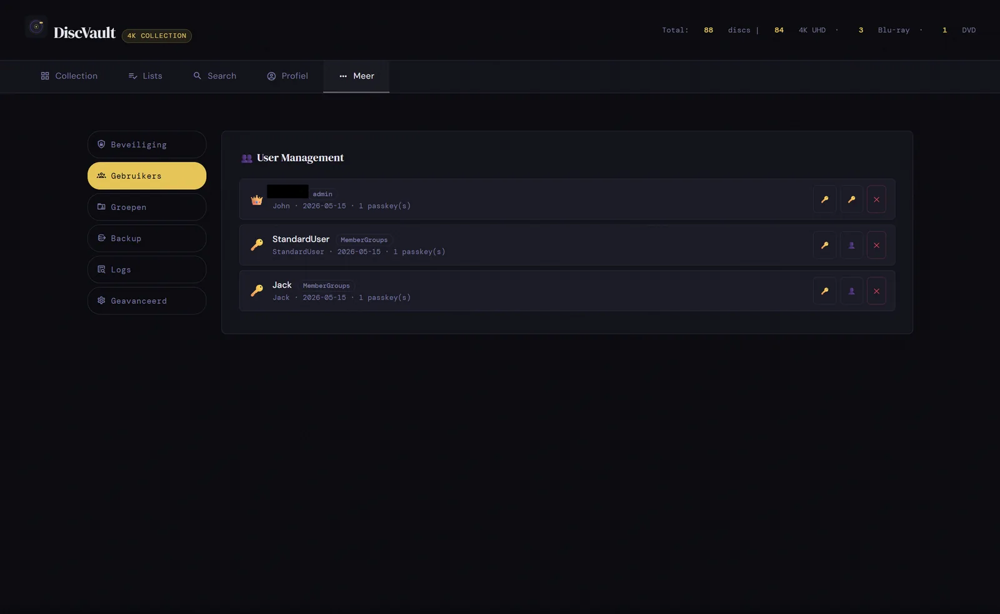
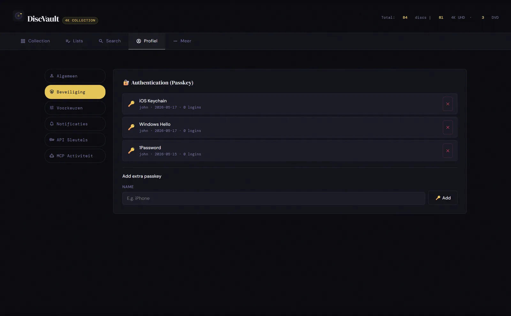
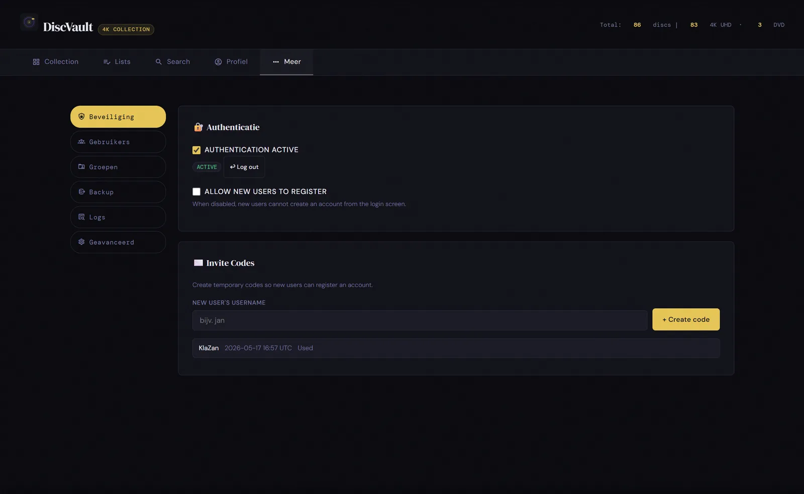
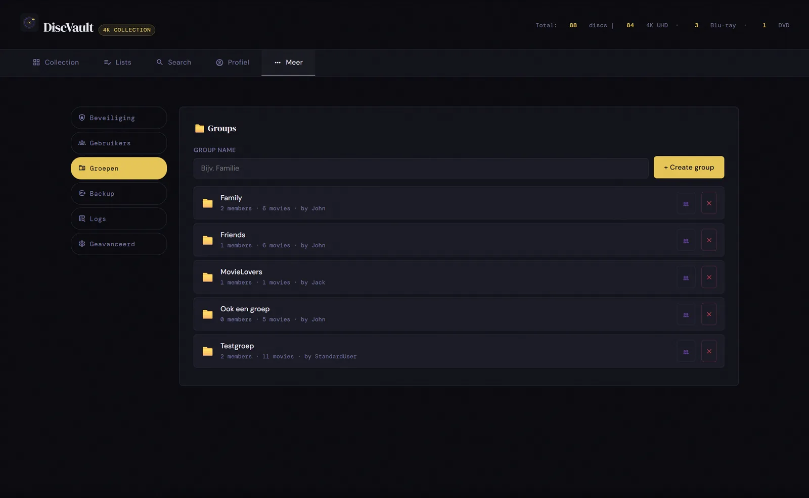
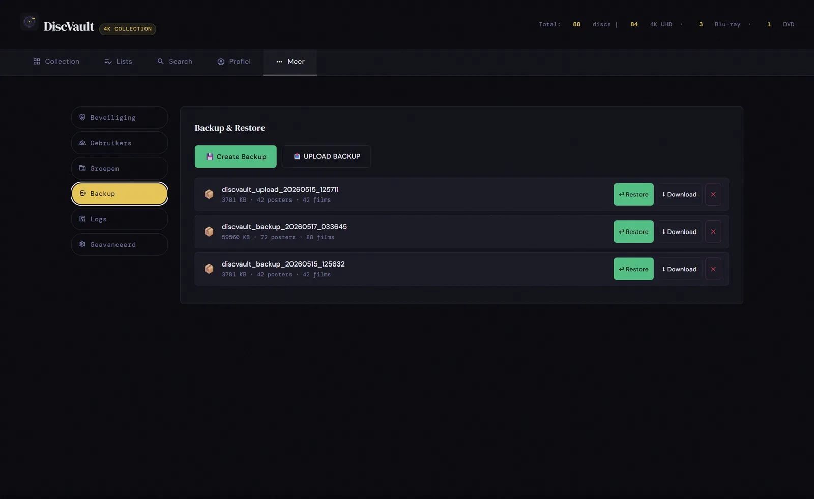
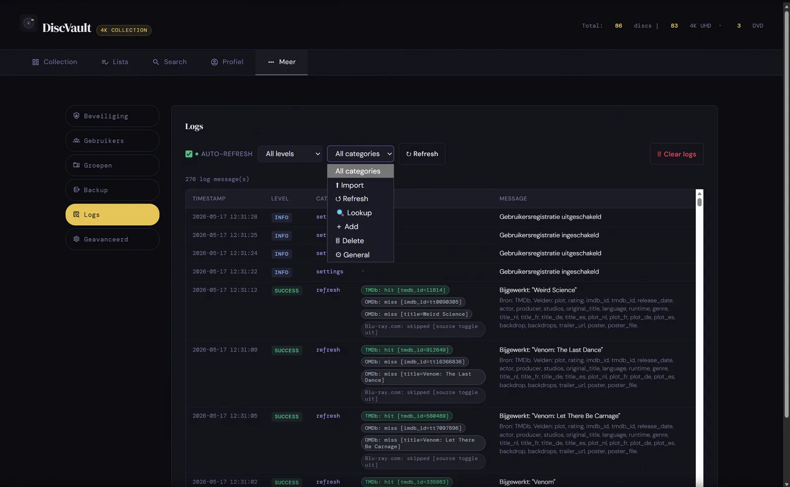
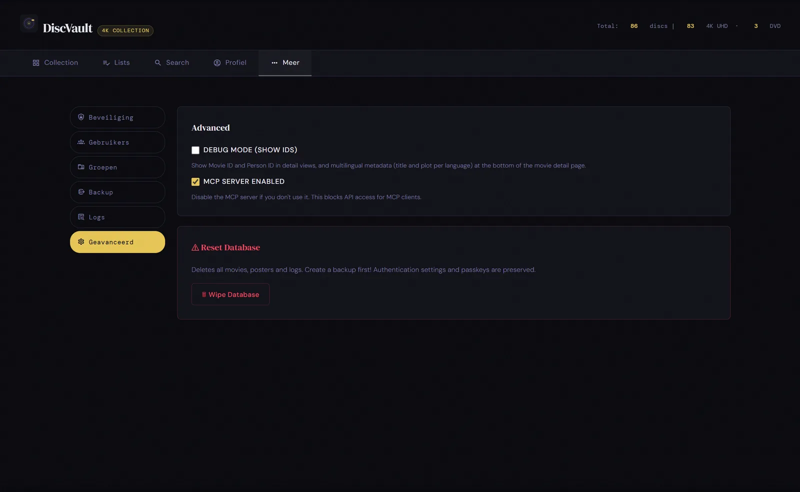
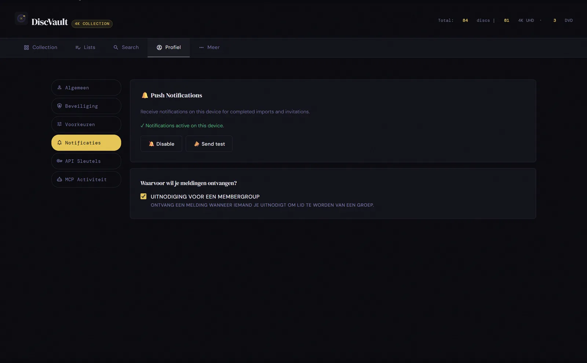

Waarvoor?
Pushmeldingen kunnen gebruikers attenderen op relevante events, zoals group invites, mits de browser en appconfig dat ondersteunen.
Beheer
DiscVault gebruikt passkeys/WebAuthn, kan invite-only registratie afdwingen en geeft admins hulpmiddelen voor users, groups, backups, logs en pushmeldingen.

Account en toegang



Wijzig je hostnaam of protocol niet zomaar na ingebruikname. RP_ID en RP_ORIGIN moeten passen bij de URL die gebruikers openen.
Continuïteit



Notificaties

Pushmeldingen kunnen gebruikers attenderen op relevante events, zoals group invites, mits de browser en appconfig dat ondersteunen.